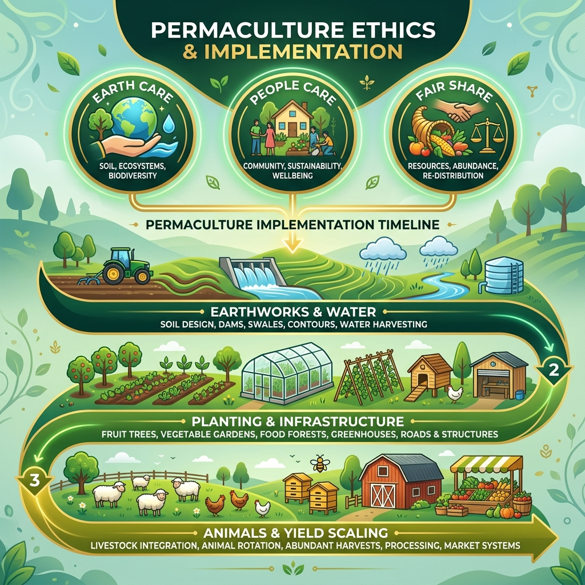
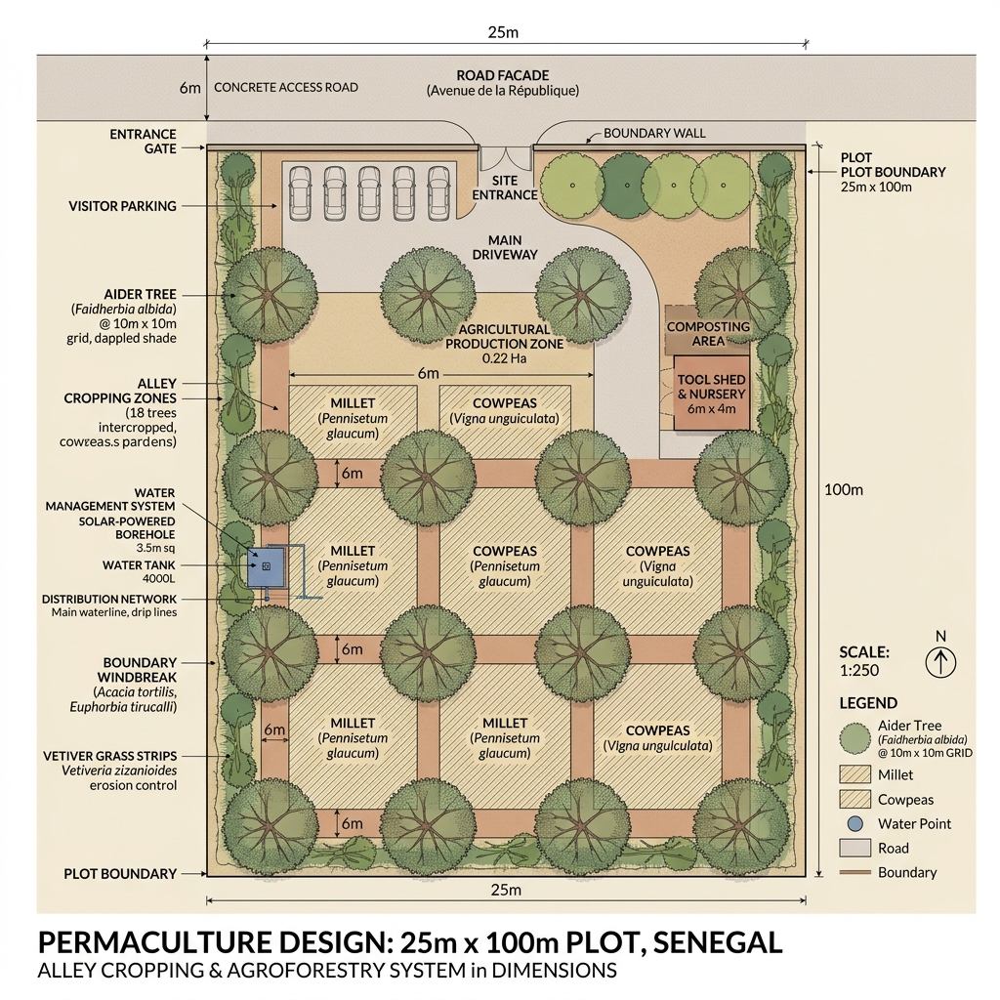
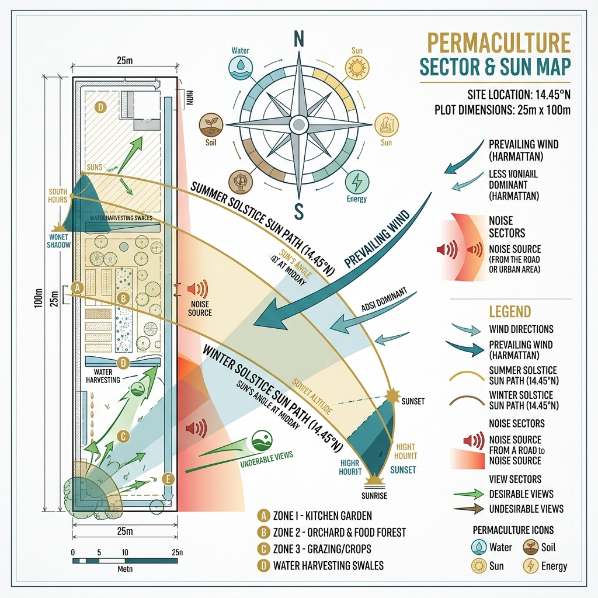
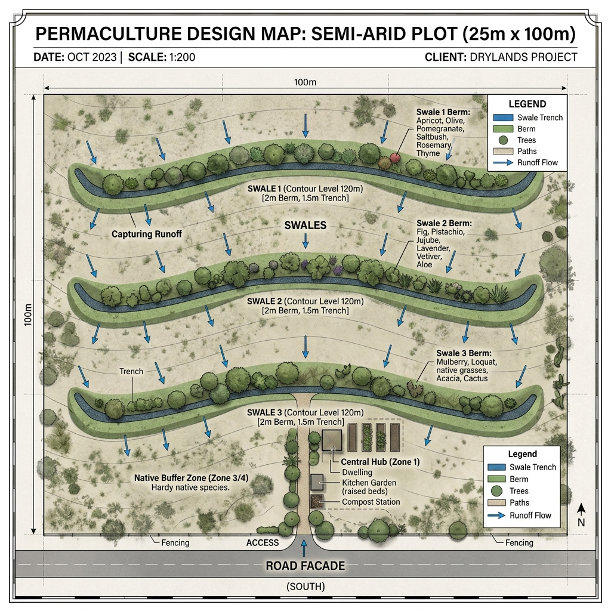
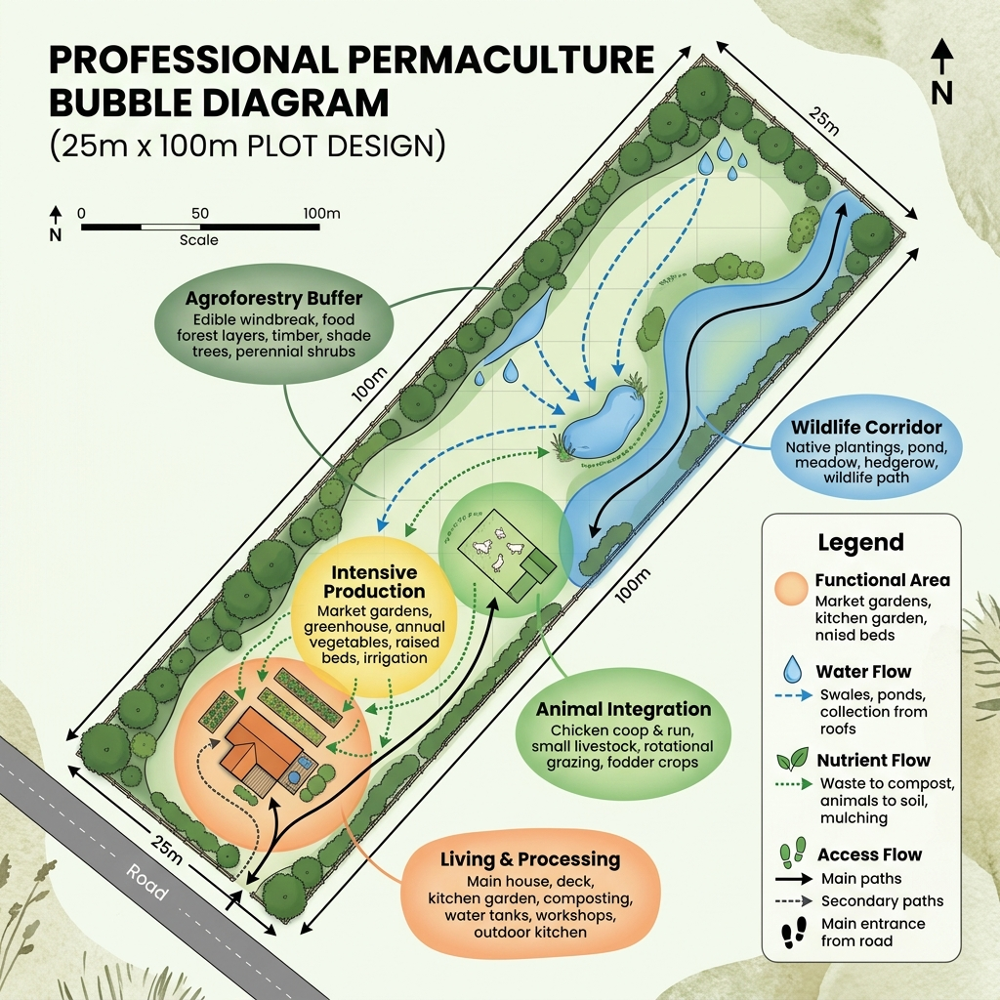
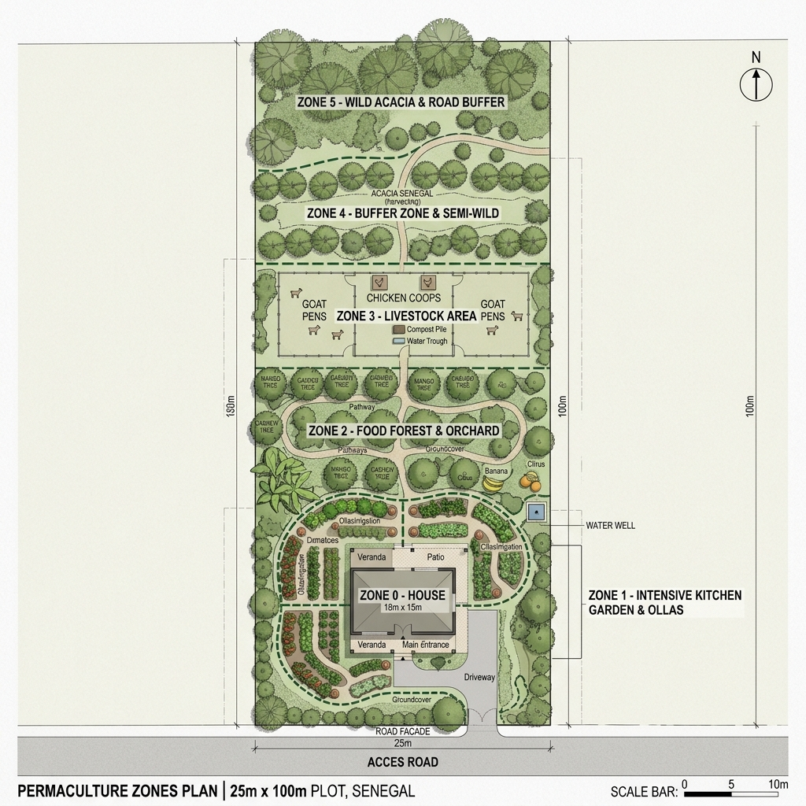
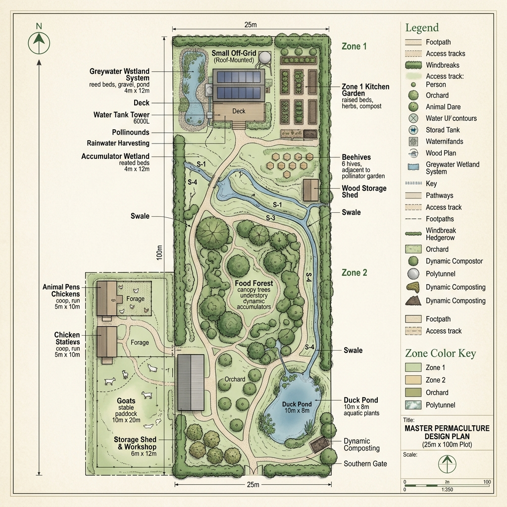

Permaculture Master Plan
Senegal Semi-Arid Regenerative Site | 25m x 100m
Project Title & Location
Integrated Arid Oasis
Location: 14°27'31.45"N, 16° 0'45.51"W (Senegal)
The site is a rectangular 2500m² plot located in the semi-arid Sahelian belt of Senegal. The climate is characterized by a short, intense rainy season and a long dry season with high evaporation rates.
Client Profile & Needs
The client seeks a fully autonomous, productive landscape that serves as both a primary residence and a commercial regenerative farm. Key needs include high-quality animal protein, diverse fruit production, and water sovereignty.
Ethics & Methodology
Permaculture Ethics
Earth Care: Soil restoration via Zai pits and Biochar.
People Care: Food security and cool microclimates.
Fair Share: Surplus distribution to local cooperatives.

Base Map & Features

The site is flat with a subtle 1.2% westward slope. Access is via the 25m road facade on the East side.
Sector Analysis

Key energy flows: High solar radiation from the South/Zenith. Predominant Harmattan winds from the NE during the dry season require dense windbreaks.
Water and Flow Analysis

Hydrology is managed via three primary swales on contour and a series of Zai pits to capture 100% of on-site runoff.
Soil Analysis
Pedology Report
Type: Dior Soil (Sandy Arenosol).
pH: 7.2 (Neutral).
Organic Carbon: Low (Requires intensive mulching and green manures).
Conceptual Design

Grouping functions for maximum efficiency: House near the road (Zone 0) for access, Intensive production surrounding it (Zone 1), and animals as a nutrient cycle in Zone 3.
Zones Map

A standard Zone 0-5 hierarchy implemented for the 2500m² site.
Final Master Plan

The complete integrated layout featuring housing, 5kW solar array, animal coops, and the food forest orchard.
Water Management Component
Olla irrigation buried in Zone 1. Fog harvesting nets at the back ridge. Greywater directed to the Cashew orchard. 20,000L central tower storage.
Soil and Plant Component
Guild Strategy
Overstory: Baobab, Mango, Neem.
Understory: Moringa, Cashew, Pigeon Pea.
Groundcover: Sweet Potato, Vetiver Grass.
Implementation Timeline
| Phase | Action | Timing |
|---|---|---|
| Phase 1 | Earthworks, Swales, Borehole, Solar | Month 0-3 |
| Phase 2 | Pioneer Planting (Neem, Acacia), Animal Pens | Month 3-6 |
| Phase 3 | Fruit Tree Installation, Guild Infill | Month 6-12 |
| Maturity | Yield Scaling, Processing Hub completion | Year 2-5 |